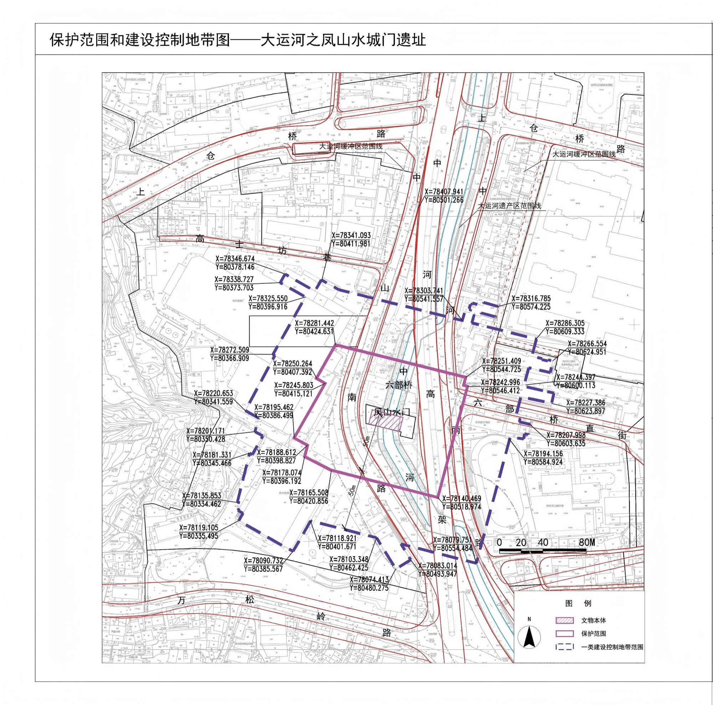
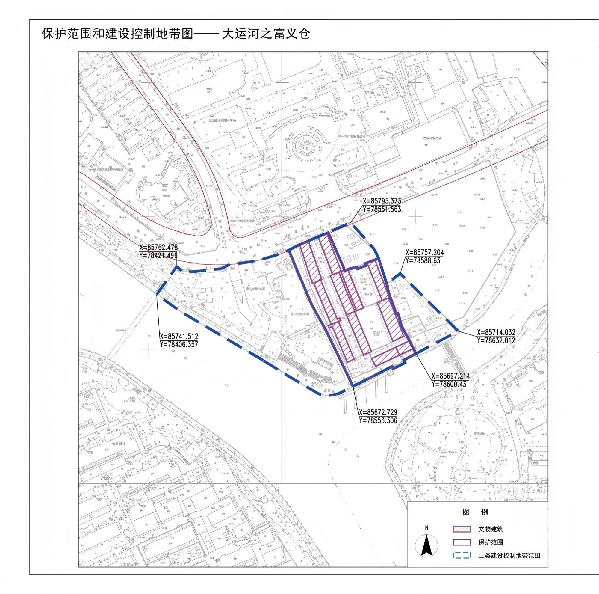
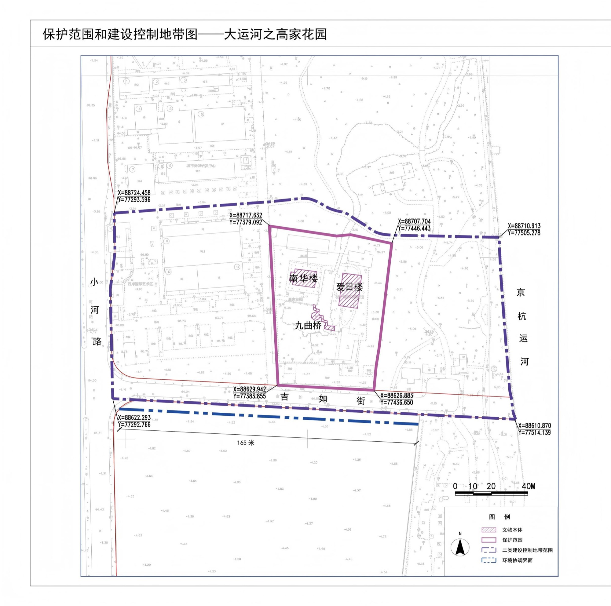
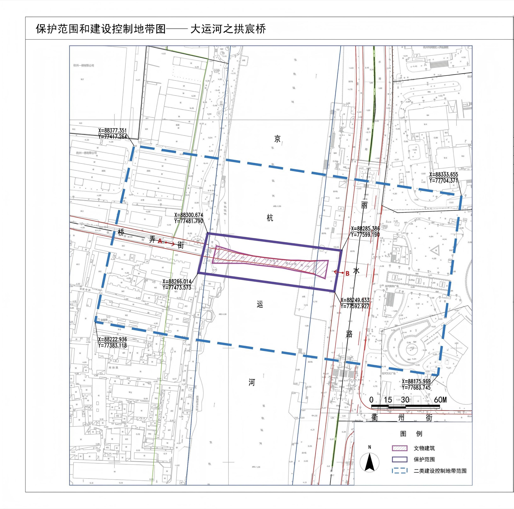
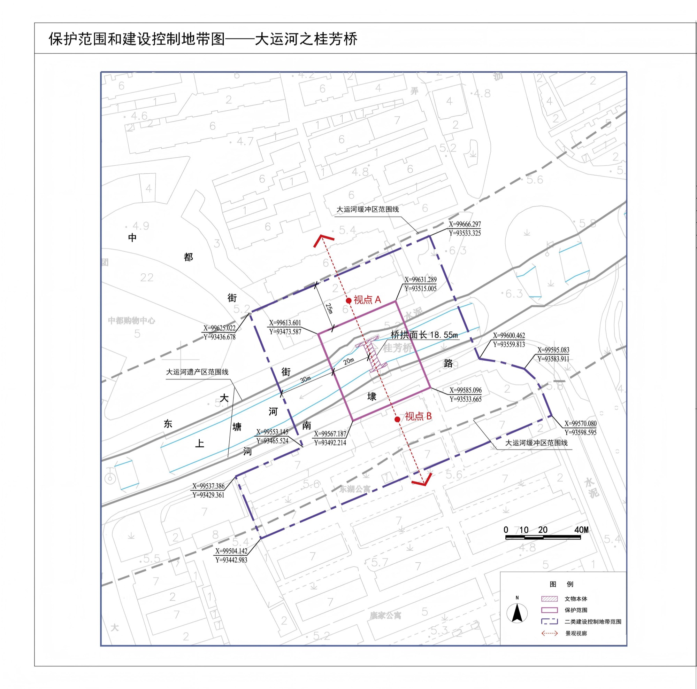
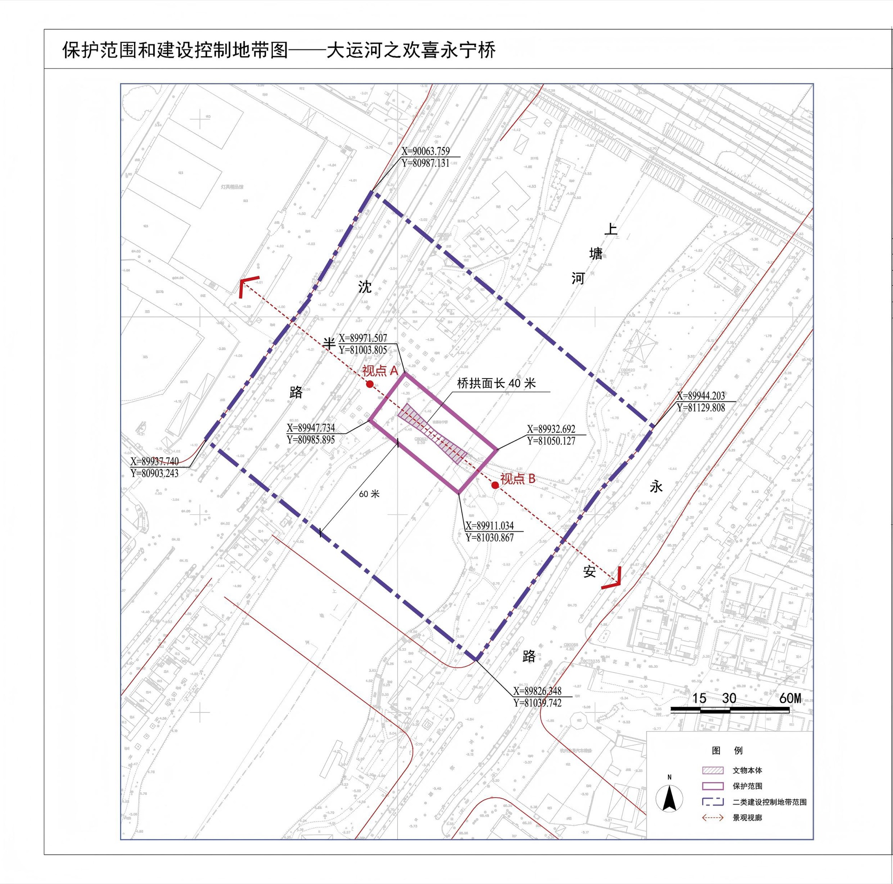
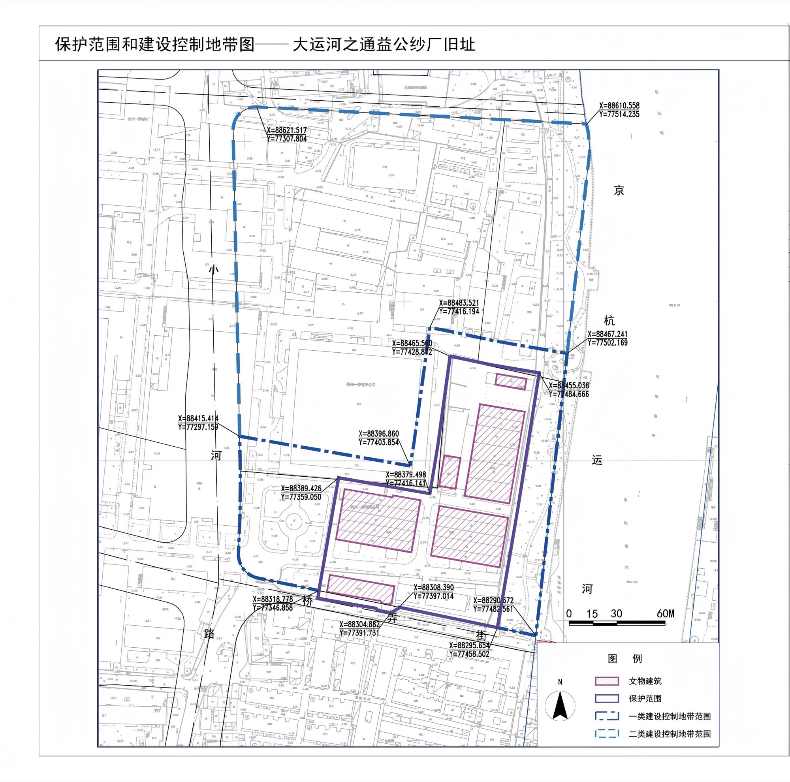
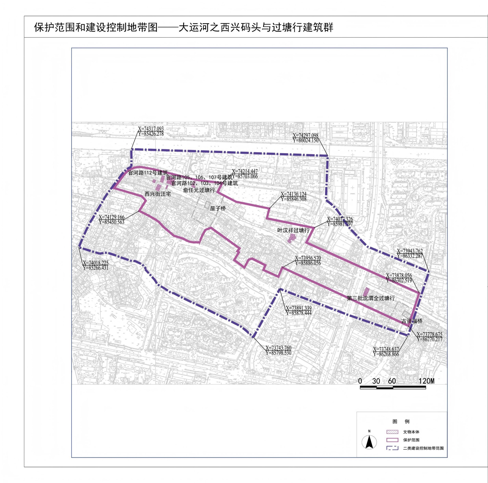
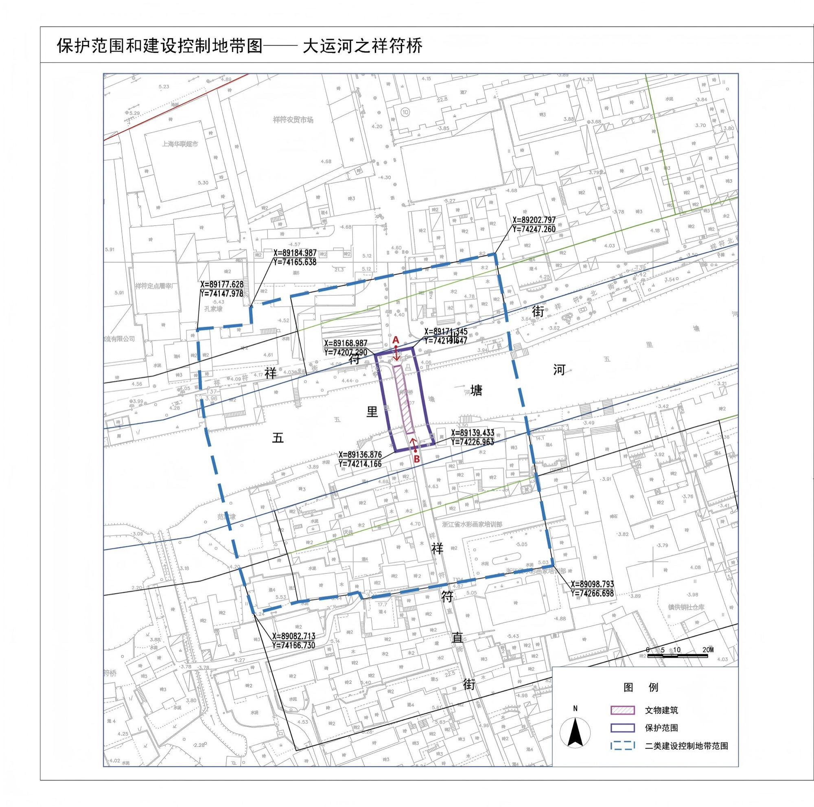
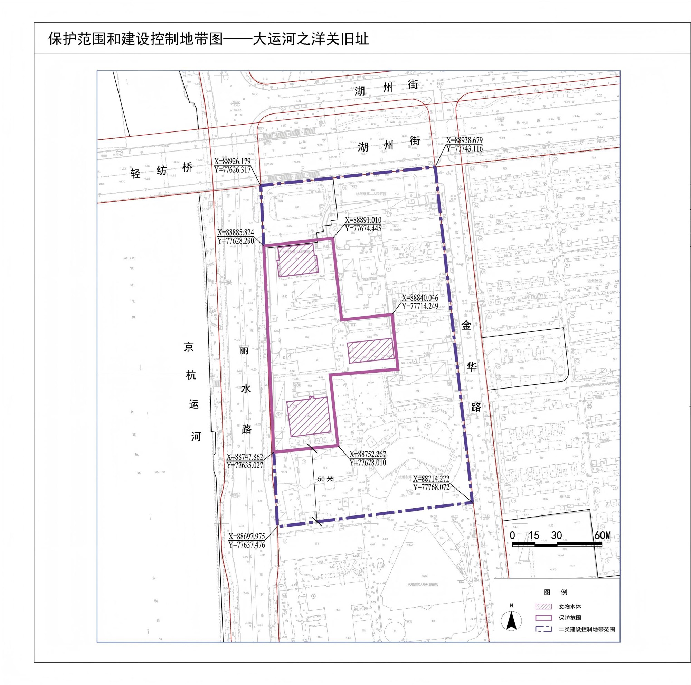

文物概况：
名 称：大运河
地 址：杭州
年 代：春秋至中华人民共和国
结 构：
类 别：
文物简介：
大运河是世界上最古老的运河之一，始建于公元前486年，包括京杭大运河、隋唐大运河和浙东运河三部分，地跨北京、天津、河北、山东、江苏、浙江、河南和安徽8个省、直辖市，是世界上开凿时间较早、规模最大、线路最长、延续时间最久且目前仍在使用的人工运河，是中国古代重要的漕运通道和经济命脉。大运河沿线包含桥、闸、坝、仓、寺观、塔等多种文物，与大运河周边众多与运河息息相关的文化遗产共同组成了运河文化。
杭州作为大运河的重要节点城市，境内运河主河道共有三段，一段为隋代故道上塘河，一段为元末以来江南运河的杭州城区段，一段为浙东运河萧山段，此外还有几条重要的支线、城河、内河与引河河道。杭州市域的运河正河中京杭大运河62公里，上塘河27公里，浙东运河38公里，合计127公里。支线运河余杭塘河24公里，奉口河（西塘河）18公里，合计42公里。运河流经余杭区、杭州中心城区、萧山区。
--------------------点击查看大图--------------------
         